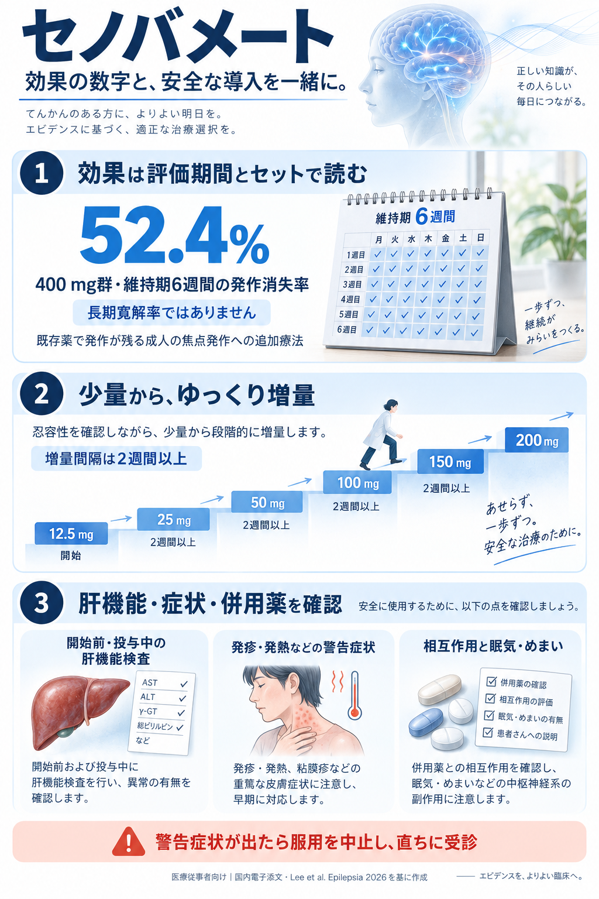

セノバメート：効果と安全な導入
医療従事者向け · 2026年9月21日確認

52.4％はC035試験400 mg群の維持期6週間の結果で、長期寛解率ではありません。国内維持量は100～200 mg/日です。処方時は最新の国内電子添文をご確認ください。
医療従事者向け · 2026年9月21日確認

52.4％はC035試験400 mg群の維持期6週間の結果で、長期寛解率ではありません。国内維持量は100～200 mg/日です。処方時は最新の国内電子添文をご確認ください。